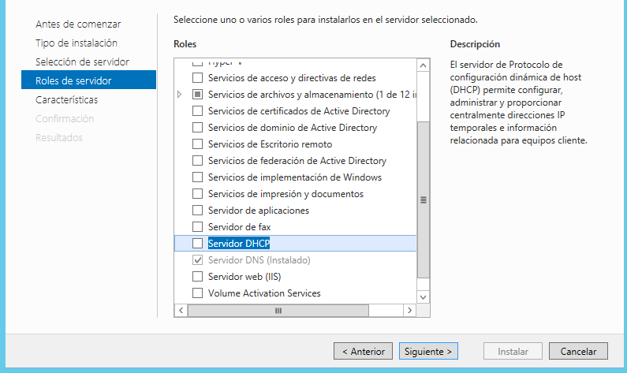
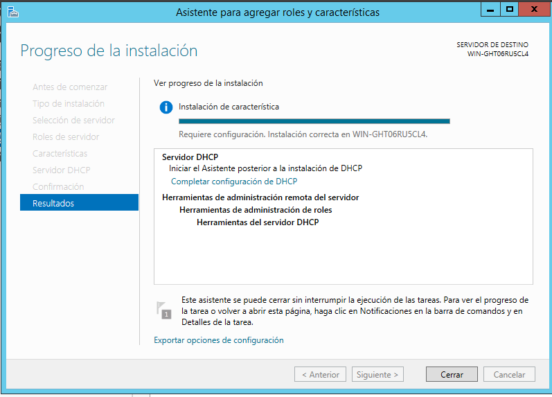
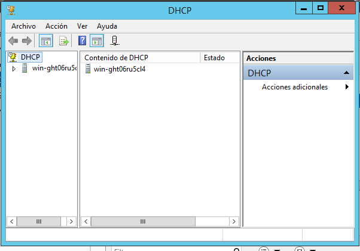
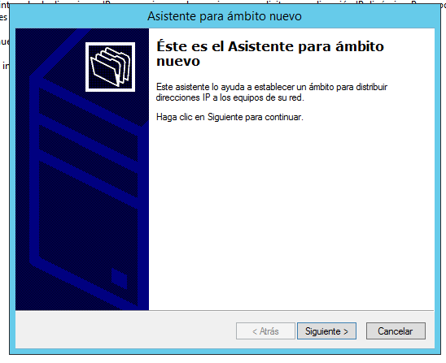
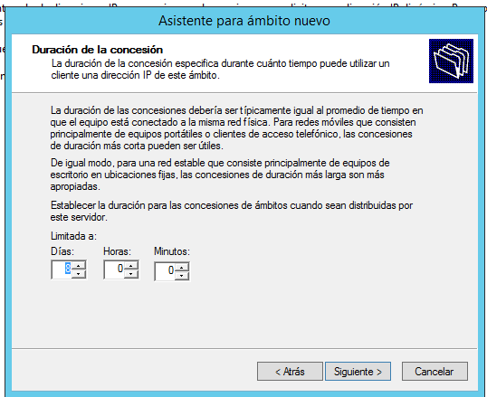
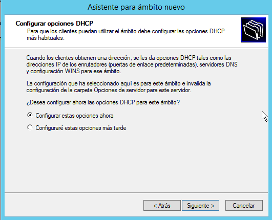

DHCP: Protocolo de Configuración Dinámica de Host- Dynamic Host Configuration Protocol
El Protocolo de configuración dinámica de host (DHCP) es un protocolo cliente-servidor que proporciona automáticamente un host de protocolo de Internet (IP) con su dirección IP y otra información de configuración relacionada, como la máscara de subred y la puerta de enlace de predeterminada.
Instalación DHCP
Agregar roles y caracteristicas

Siguiente

Seleccionar servicio

Se elige el Servicio
Seleccionar agregar caracteristicas
Click en siguiente hasta llegar a la siguiente ventana
Al finalizar la Instalación aparecera en pantalla la siguiente imagen, seleccionar configuración 
Seleccionar confirmar
Instalación completa.

Configuración DHCP:
abrir configuracion de dhcp
Abrira la siguiente pantalla, que es donde se realizaran las configuraciones:

Abrirá un asistente para crear un ámbito nuevo:
Especificar un nombre para el ámbito y una descripción:
En esta pantalla indicaremos las direcciones IP inicial y final, la máscara de subred se asigna automáticamente siguiente:
«Siguiente»:
 En la siguiente ventana podremos establecer una IP para que sirva como router o Gateway en este ámbito y se hará clic en Siguiente:
Indicar dominio
Se activa el ámbito y se finaliza el asistente:
Se visualiza que ya esta creado el nuevo ambito: